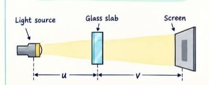

Shadow Method
Our first idea was simple: if light travels in straight lines, could the shadow of the glass slab reveal its dimensions?
Shadow Method — Apparatus 📸

Physics Principle
In a uniform medium, light travels approximately in straight lines. When light falls on an object, a shadow or projection is formed. By comparing this projection with a known reference and applying geometrical similarity, the dimensions of the glass slab can be estimated.
Apparatus
- Glass slab
- Light source
- Screen
- Reference object
- Metre scale
- Stand/support
Procedure
- Place the glass slab in a fixed position.
- Illuminate it using the light source.
- Obtain a clear projection on the screen.
- Use a known reference for calibration.
- Measure the projected dimensions.
- Apply the geometrical relationship.
- Repeat for the required orientations.
Why does it work?
The shadow is a geometrical projection. Its dimensions depend on the dimensions of the slab and the geometry of the light-source and screen arrangement.
Length — L
The long projected edge can be compared with a known reference to determine the length of the glass slab.
Breadth — B
The transverse projected dimension can similarly be calibrated using the reference object.
Thickness — t
By changing the orientation of the glass slab, its smaller thickness dimension can also be obtained from the projection.
Unknown dimension ≈ Known reference dimension ×
(Projected slab dimension ÷ Projected reference dimension)
Our Shadow Experiment 📸